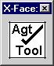
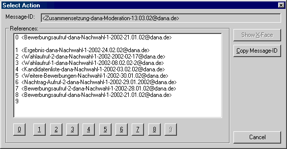
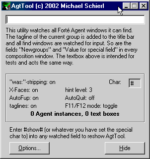
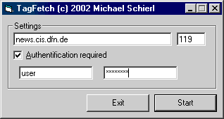

[Forté Agent Tools]
[JHEditor]
[Direct Socket Control]
[JFileSync]
[Tastaturlayouts]
[HTML-ISO-Webservice]
[SMsoft-Hauptseite]
[Ältere Tools]
|
[News]
[Newsletter]
[Über den Autor]
Forté Agent Tools
Hier können Sie meine "Addons" für Forte Agent herunterladen.
Da diese in Microsoft Visual Basic 6.0 geschrieben sind, benötigen
Sie dafür die Visual Basic 6.0 Runtime. Diese können Sie
-
bei Microsoft (Verwenden Sie die
richtige Sprachversion!) oder
-
von meiner Homepage (deutsche Version, SP5): VBRUN60SP5.EXE (1,14
MB)
herunterladen.
NEU: Lassen
Sie sich über Updates informieren in meinem Newsletter  (Auf die Flagge klicken, um sich anzumelden.)
(Auf die Flagge klicken, um sich anzumelden.)
AgtF'ups, FupHelp
Dies sind alte Versionen von AgtTool (siehe unten)
Dies ist das "Hauptprogramm" dieser Website. Es steht seit Version 0.25 unter GNU General Public License, ist also freie Software.
Funktionen:
-
Überwacht die Felder "Newsgroups" und "Followup-To" und das Suchfenster
von Forté Agent 1.8/1.9/2.0 (2.0 seit Version 0.25).
-
Newsgroupnamen können durch Tippen von # automatisch vervollständigt
werden.
-
Aliasliste für eigene Abkürzungen für häufig verwendete
F'up und X-Post-Ziele.
-
Die Tagline der gerade ausgewählten Gruppe wird in der Titelleiste
angezeigt.
-
Newsgroups können automatisch in des Newsgroups und in das F'up2-Feld
eingegeben werden, indem man -# vor dem Newsgroupnamen eingibt.
-
Followup-To poster kann durch --# abgekürzt werden
-
Übersichtlicher Konfigurationsdialog
-

In die Zwischenablage
kopierte X-Faces können in einem kleinen Fenster angezeigt werden:
-
Man kann mit F12 X-Faces im aktuellen Artikel anzeigen
-
Man kann mit F11 ein Fenster anzeigen, um zum Vorgängerartikel zu
wechseln oder Message-IDs zu kopieren etc.

-
Subjectwechsel mit "(was: ...)" werden automatisch richtig entfernt. Es
gibt auch eine Funktion, die einen beim Erzeugen eines solchen Subjectwechsels
unterstützt.
-
AgtTool kann automatisch den Agent starten, wenn es gestartet wird und
sich beenden, wenn Agent geschlossen wird.
-
Verifizieren von X-PGP-Sig-Signaturen
-
Zufallssignaturen (seit 0.17)
-
alle Onlineaktionen mit einem Hotkey (seit 0.17)
-
kinderleichtes Superseden von Artikeln (seit 0.20)
-
Newsgruppenliste, in der nach Taglines etc. gesucht werden kann (seit 0.25)
Screenshot:

Taglines:
Bei AgtTool sind Taglines der folgenden Hierarchien enthalten (Stand: 2002-08-26):
-
at.*
-
ch.*
-
de.*
-
fido.ger.*
|
-
ger.*
-
hamster.*
-
maus.*
-
z-netz.*
|
TagFetch (V0.11, Download, 61
KB)
Mit diesem Utility kann man sich neue/zusätzliche Taglines vom Newsserver
herunterladen.

Compface/VB (Download, 35
KB)
Mit dieser DLL kann man X-Faces in Visual Basic codieren/decodieren. Die
DLL selbst ist im AgtTool enthalten. Dies ist der Visual C++ Source dieser
DLL - er basiert auf der COMPFACE.DLL von WinFace (den Originalsource erhalten
Sie unter http://www.xs4all.nl/~walterln/winface/).
Weitere Informationen finden Sie in der Readme-Datei dieses Pakets.
Kontakt
Sie erreichen mich unter sm-soft@gmx.de.
Wenn Sie meine restlichen Programme sehen wollen, besuchen Sie sich doch
mal meine Homepage: http://smsoft.ixy.de/
Michael Schierl, Ignaz-Baldauf-Str. 5, D-86551
Aichach, Germany
Andere Agent-Tools
Diese Utilities habe nicht ich
geschrieben, aber ich finde sie (bzw. fand sie vor AgtTool) nützlich: